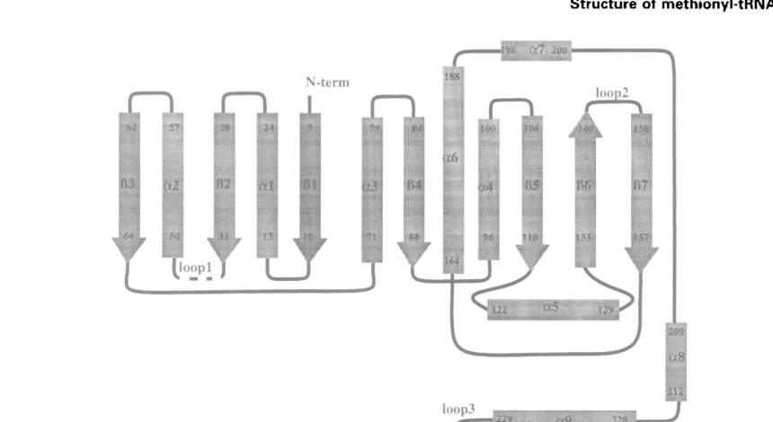

fmt encodes methionyl-tRNA formyltransferase, the enzyme that formylates initiator Met-tRNA(fMet) to produce N-formyl-methionyl-tRNA for bacterial translation initiation.
| GO Term | Evidence | Action | Reason |
|---|---|---|---|
|
GO:0003824
catalytic activity
|
IEA
GO_REF:0000120 |
MARK AS OVER ANNOTATED |
Summary: Catalytic activity is true but uninformative for Fmt.
Reason: The specific methionyl-tRNA formyltransferase activity should be used instead of the generic catalytic parent.
Supporting Evidence:
file:PSEPK/fmt/fmt-uniprot.txt
Methionyl-tRNA formyltransferase
file:PSEPK/fmt/fmt-goa.tsv
GO:0003824 catalytic activity
|
|
GO:0004479
methionyl-tRNA formyltransferase activity
|
IEA
GO_REF:0000120 |
ACCEPT |
Summary: The methionyl-tRNA formyltransferase annotation is the correct core molecular function.
Reason: UniProt assigns EC 2.1.2.9 and the Rhea reaction for formyl transfer to initiator methionyl-tRNA.
Supporting Evidence:
file:PSEPK/fmt/fmt-uniprot.txt
Attaches a formyl group to the free amino group
file:PSEPK/fmt/fmt-uniprot.txt
Reaction=L-methionyl-tRNA(fMet)
file:PSEPK/fmt/fmt-goa.tsv
GO:0004479 methionyl-tRNA formyltransferase activity
file:PSEPK/fmt/fmt-deep-research-falcon.md
Fmt catalyzes formylation of initiator methionyl-tRNA, converting **Met-tRNAfMet to fMet-tRNAfMet** during translation initiation; this is the canonical reaction associated with EC 2.1.2.9.
file:PSEPK/fmt/fmt-deep-research-falcon.md
The preferred one-carbon donor is **10-formyl-THF**; 2023 work showed **10-formyl-DHF** can also act as an alternative donor
|
|
GO:0005829
cytosol
|
IEA
GO_REF:0000118 |
KEEP AS NON CORE |
Summary: A cytosolic location is appropriate for this bacterial translation enzyme but is not the core function.
Reason: TreeGrafter places Fmt in the cytosol, consistent with a soluble bacterial tRNA-modification enzyme.
Supporting Evidence:
file:PSEPK/fmt/fmt-uniprot.txt
DR GO; GO:0005829; C:cytosol
file:PSEPK/fmt/fmt-goa.tsv
GO:0005829 cytosol
file:PSEPK/fmt/fmt-deep-research-falcon.md
Fmt functions on cytosolic tRNA and interfaces with ribosome‑mediated initiation
|
|
GO:0006413
translational initiation
|
IEA
GO_REF:0000108 |
KEEP AS NON CORE |
Summary: Fmt contributes to translational initiation through initiator tRNA formylation, but this is a broader biological consequence.
Reason: The direct activity is conversion of methionyl-tRNA to N-formyl-methionyl-tRNA; translational initiation is the downstream process enabled by that modification.
Supporting Evidence:
file:PSEPK/fmt/fmt-uniprot.txt
promoting its recognition by IF2
file:PSEPK/fmt/fmt-goa.tsv
GO:0006413 translational initiation
file:PSEPK/fmt/fmt-deep-research-falcon.md
Formylation increases the efficiency and specificity of initiation by enhancing interaction of the initiator tRNA with initiation factor 2 (IF2) and disfavoring elongator‑tRNA handling (e.g., EF‑Tu).
file:PSEPK/fmt/fmt-deep-research-falcon.md
Fmt acts in the bacterial **translation initiation / N-formylmethionine pathway**, preparing initiator tRNA for efficient entry into the ribosomal P site and thereby improving initiation efficiency and fidelity.
|
|
GO:0019988
charged-tRNA amino acid modification
|
IEA
GO_REF:0000104 |
KEEP AS NON CORE |
Summary: Charged-tRNA amino acid modification is a correct parent process for Fmt.
Reason: Fmt modifies the amino group on charged initiator methionyl-tRNA, but the more exact process is GO:0071951.
Supporting Evidence:
file:PSEPK/fmt/fmt-uniprot.txt
Attaches a formyl group to the free amino group of methionyl-
file:PSEPK/fmt/fmt-goa.tsv
GO:0019988 charged-tRNA amino acid modification
|
|
GO:0071951
conversion of methionyl-tRNA to N-formyl-methionyl-tRNA
|
IEA
GO_REF:0000120 |
ACCEPT |
Summary: This is the exact biological-process annotation for the Fmt reaction.
Reason: The UniProt reaction explicitly converts methionyl-tRNA(fMet) to N-formyl-methionyl-tRNA(fMet).
Supporting Evidence:
file:PSEPK/fmt/fmt-uniprot.txt
N-formyl-L-methionyl-tRNA(fMet)
file:PSEPK/fmt/fmt-goa.tsv
GO:0071951 conversion of methionyl-tRNA to N-formyl-methionyl-tRNA
file:PSEPK/fmt/fmt-deep-research-falcon.md
an enzyme that formylates the initiator methionyl‑tRNA to produce **fMet‑tRNA\^fMet**, thereby supporting efficient bacterial translation initiation
|
Q: Does KT2440 use any condition-specific backup mechanism for initiator tRNA formylation when fmt activity is reduced?
Experiment: Measure initiator tRNA formylation and translation initiation efficiency after conditional depletion of fmt.
Type: tRNA charging/formylation assay
The research report should be a detailed narrative explaining the function, biological processes, and localization of the gene product. Citations should be given for all claims.
You should prioritize authoritative reviews and primary scientific literature when conducting research. You can supplement
this with annotations you find in gene/protein databases, but these can be outdated or inaccurate.
We are specifically interested in the primary function of the gene - for enzymes, what reaction is catalyzed, and what is the substrate specificity? For transporters, what is the substrate? For structural proteins or adapters, what is the broader structural role? For signaling molecules, what is the role in the pathway.
We are interested in where in or outside the cell the gene product carries out its function.
We are also interested in the signaling or biochemical pathways in which the gene functions. We are less interested in broad pleiotropic effects, except where these elucidate the precise role.
Include evidence where possible. We are interested in both experimental evidence as well as inference from structure, evolution, or bioinformatic analysis. Precise studies should be prioritized over high-throughput, where available.
The UniProt entry provided (Q88RR2; gene fmt; locus PP_0067) corresponds to methionyl‑tRNA formyltransferase (Fmt; EC 2.1.2.9), an enzyme that formylates the initiator methionyl‑tRNA to produce fMet‑tRNA\^fMet, thereby supporting efficient bacterial translation initiation. In the literature retrieved with the tools, fmt/Fmt consistently refers to this enzyme class and no alternate “fmt” gene meaning was encountered; however, no KT2440/PP_0067/Q88RR2 primary experimental study was successfully retrieved, so organism‑specific phenotypes and kinetics for P. putida KT2440 are inferred from conserved bacterial biology and from studies in other bacteria (noted explicitly below). (mazel1994geneticcharacterizationof pages 1-2, cai2017lackofformylated pages 1-2)
| Aspect | Evidence summary | Key citations |
|---|---|---|
| Identity | UniProt Q88RR2 is annotated as fmt / PP_0067 in Pseudomonas putida KT2440 and belongs to the conserved bacterial methionyl-tRNA formyltransferase (Fmt) family; literature on Fmt in other bacteria matches this enzyme class and supports transfer of a conserved core function, but direct biochemical characterization for P. putida KT2440 was not found. | (mazel1994geneticcharacterizationof pages 1-2, cai2017lackofformylated pages 1-2) |
| Reaction | Fmt catalyzes formylation of initiator methionyl-tRNA, converting Met-tRNAfMet to fMet-tRNAfMet during translation initiation; this is the canonical reaction associated with EC 2.1.2.9. | (mazel1994geneticcharacterizationof pages 1-2, sah2023methionyltrnaformyltransferaseutilizes pages 6-9, sah2023methionyltrnaformyltransferaseutilizes pages 4-6) |
| Substrates | The preferred one-carbon donor is 10-formyl-THF; 2023 work showed 10-formyl-DHF can also act as an alternative donor, whereas several other folate species tested were not substrates. | (sah2023methionyltrnaformyltransferaseutilizes pages 6-9, sah2023methionyltrnaformyltransferaseutilizes pages 4-6) |
| Products | The enzymatic products are fMet-tRNAfMet plus the corresponding folate by-product, with LC-MS/MS supporting production of THF from 10-formyl-THF and DHF from 10-formyl-DHF. | (sah2023methionyltrnaformyltransferaseutilizes pages 6-9, sah2023methionyltrnaformyltransferaseutilizes pages 4-6) |
| Pathway role | Fmt acts in the bacterial translation initiation / N-formylmethionine pathway, preparing initiator tRNA for efficient entry into the ribosomal P site and thereby improving initiation efficiency and fidelity. | (mazel1994geneticcharacterizationof pages 1-2, cai2017lackofformylated pages 8-9) |
| Coupled enzymes | Fmt is functionally linked to MetRS (loads methionine onto initiator tRNA), FolD/GlyA and broader folate one-carbon metabolism (supply formyl donor), and peptide deformylase (Def/PDF) plus methionine aminopeptidase downstream during nascent protein N-terminal processing. | (duroc2009mutationsinthree pages 1-3, cai2017lackofformylated pages 1-2, cai2017lackofformylated pages 9-10) |
| Cellular localization | The relevant activity is expected in the bacterial cytosol, where initiator tRNA charging, formylation, and ribosome-mediated translation initiation occur; no evidence was found for alternative localization in P. putida KT2440. | (mazel1994geneticcharacterizationof pages 1-2, sah2023methionyltrnaformyltransferaseutilizes pages 6-9) |
| Genetic context | In several bacteria, fmt is genetically linked to def and may occur in a def-fmt operon; this is well documented in E. coli and other eubacteria, but equivalent operon structure was not directly verified here for P. putida KT2440. | (mazel1994geneticcharacterizationof pages 1-2, duroc2009mutationsinthree pages 1-3) |
| Phenotypes when disrupted | Loss of fmt is generally not absolutely lethal but impairs growth and physiology; severity varies by species, from severe growth defects in E. coli to a more modest growth-rate defect reported for Pseudomonas aeruginosa, with additional pleiotropic defects seen in Bacillus subtilis. These cross-species data support a likely important but not necessarily essential role for Q88RR2. | (cai2017lackofformylated pages 1-2, cai2017lackofformylated pages 9-10, cai2017lackofformylated pages 8-9) |
| Drug relevance | Fmt is central to the Fmt/PDF axis exploited in antibacterial research: inactivation of fmt can bypass the need for deformylation and confer resistance to peptide deformylase inhibitors, while folate-pathway perturbation can alter Fmt-dependent initiation. This makes Fmt biologically relevant to antibiotic action even when PDF is the direct target. | (duroc2009mutationsinthree pages 1-3, cai2017lackofformylated pages 9-10) |
| Recent findings 2023 | A key 2023 advance showed Fmt can use 10-formyl-DHF as an alternative substrate in vitro and in vivo, linking folate redox state more directly to translation initiation and explaining aspects of trimethoprim/antifolate response. Reported efficiency with 10-formyl-DHF was only about 0.1-1% of that with 10-formyl-THF. | (sah2023methionyltrnaformyltransferaseutilizes pages 10-12, sah2023methionyltrnaformyltransferaseutilizes pages 6-9) |
Table: This table summarizes the conserved functional annotation of bacterial methionyl-tRNA formyltransferase and maps it to UniProt Q88RR2 from Pseudomonas putida KT2440. It distinguishes direct evidence from cross-species inference where P. putida-specific experiments were not found.
Bacterial translation initiation commonly uses a dedicated initiator tRNA (tRNA_i / tRNA\^fMet). The initiator tRNA is aminoacylated with methionine and then Fmt transfers a formyl group onto the amino group of the methionyl moiety, generating N‑formyl‑methionyl‑tRNA (fMet‑tRNA\^fMet). This formylation step is widely described as a defining feature of eubacterial translation initiation. (mazel1994geneticcharacterizationof pages 1-2, sah2023methionyltrnaformyltransferaseutilizes pages 6-9)
Fmt uses N\^10‑formyl‑tetrahydrofolate (10‑CHO‑THF) as the classical formyl donor, linking folate one‑carbon metabolism to translation initiation. (mazel1994geneticcharacterizationof pages 1-2, duroc2009mutationsinthree pages 1-3)
The N‑terminal formyl group is typically removed co‑translationally by peptide deformylase (PDF/Def), after which methionine aminopeptidase can remove the initiator methionine when permitted by the penultimate residue. This coordinated N‑terminal processing has been central to the view that PDF is an attractive antibacterial target, and it explains why perturbations in fmt can modulate susceptibility/resistance to PDF‑targeting antibiotics. (cai2017lackofformylated pages 1-2, duroc2009mutationsinthree pages 1-3)
A key genetic observation is that def and fmt are often genetically linked, including operon‑level linkage in E. coli, reflecting their functional coupling in N‑terminal processing of nascent proteins. (mazel1994geneticcharacterizationof pages 1-2)
Formylation increases the efficiency and specificity of initiation by enhancing interaction of the initiator tRNA with initiation factor 2 (IF2) and disfavoring elongator‑tRNA handling (e.g., EF‑Tu). This provides a mechanistic basis for why formylation improves initiation efficiency even when not strictly essential for viability in some organisms/conditions. (cai2017lackofformylated pages 8-9)
Fmt functions on cytosolic tRNA and interfaces with ribosome‑mediated initiation; thus, for a Gram‑negative bacterium like P. putida KT2440, the expected localization is cytosolic. This localization is consistent with how bacterial formylation is described in mechanistic and genetic studies. (mazel1994geneticcharacterizationof pages 1-2, sah2023methionyltrnaformyltransferaseutilizes pages 6-9)
A notable 2023 advance (Sah & Varshney, Feb 2023, Microbiology; https://doi.org/10.1099/mic.0.001297) demonstrated that E. coli Fmt can use 10‑formyl‑dihydrofolate (10‑CHO‑DHF) as an alternative formyl donor in vitro and in vivo, in addition to the canonical 10‑CHO‑THF. LC‑MS/MS supported the expected folate product patterns: THF produced from 10‑CHO‑THF and DHF produced from 10‑CHO‑DHF during Met‑tRNA\^fMet formylation. (sah2023methionyltrnaformyltransferaseutilizes pages 4-6, sah2023methionyltrnaformyltransferaseutilizes pages 6-9)
Importantly, the alternative‑substrate route is far less efficient: ~0.1–1% relative to 10‑CHO‑THF under the conditions tested, but it may become relevant when folate pools are shifted by growth phase or by drug pressure. (sah2023methionyltrnaformyltransferaseutilizes pages 6-9)
The same study connected folate redox state and antifolate treatment to translation: under trimethoprim‑linked perturbations, stationary‑phase cells showed >5‑fold enrichment of oxidized formylated folate species (including 10‑CHO‑DHF and 10‑CHO‑folic acid) and >10‑fold depletion of several reduced folate species, with reported statistical support (multiple P values provided in the study). This provides a mechanistic bridge between antifolate action and initiation capacity mediated by Fmt. (sah2023methionyltrnaformyltransferaseutilizes pages 10-12)
Within the retrieved corpus, the most directly relevant recent mechanistic advance for Fmt was the 2023 work above. (sah2023methionyltrnaformyltransferaseutilizes pages 10-12, sah2023methionyltrnaformyltransferaseutilizes pages 6-9)
Because many bacterial proteins are initiated with formyl‑methionine and are subsequently deformylated by PDF, PDF inhibition has long been explored as an antibacterial strategy. A recurring real‑world complication is that inactivation or bypass of Fmt can confer resistance to PDF inhibitors, because if formylation is blocked, deformylation becomes unnecessary. This resistance logic is experimentally supported by genetic and pharmacological studies: in Bacillus subtilis, “Fmt bypass” mutations were repeatedly associated with high MICs to actinonin, a natural PDF inhibitor, and these bypass strains exhibited substantial fitness reduction. (duroc2009mutationsinthree pages 1-3)
In one set of resistant isolates, the actinonin MIC values reported spanned 48–512 µg/mL, and the fitness‑cost metric (WT doubling time / mutant doubling time, as defined in the study) was roughly 0.34–0.54 across representative mutants, underscoring that bypassing formylation can be costly even when it provides drug resistance. (duroc2009mutationsinthree pages 1-3)
These principles are relevant to Pseudomonas chassis engineering and infection biology because they show how translation initiation chemistry (Fmt) can indirectly control antibiotic susceptibility and global physiology through N‑terminal processing constraints. (cai2017lackofformylated pages 9-10)
Although no KT2440‑specific fmt perturbation data were retrieved, P. putida KT2440 is widely used as an engineering chassis. For chassis optimization, understanding essential translation components and their connections to folate metabolism and drug susceptibility can matter when engineering growth, stress tolerance, and metabolic flux. Mechanistically, Fmt sits at the intersection of folate C1 metabolism and protein synthesis and therefore is a plausible “hidden constraint” in pathway engineering that perturbs folate pools. (sah2023methionyltrnaformyltransferaseutilizes pages 10-12, sah2023methionyltrnaformyltransferaseutilizes pages 6-9)
Authoritative genetic analyses in E. coli and other eubacteria support the view that blocking formylation does not always abolish growth, though it can reduce growth rate and impose physiological defects. In early operon‑level characterization of the deformylase/formyltransferase system, bacteria impaired in folate formyl donor synthesis or in the transformylase (Fmt) were described as able to “sustain growth, albeit at a reduced rate, using unformylated Met‑tRNA_i.” (mazel1994geneticcharacterizationof pages 1-2)
Later work highlighted that the consequences of losing formylation are species‑dependent and can be pleiotropic. In B. subtilis, lack of formylated initiator methionine impacted adaptive programs (motility/biofilms/sporulation) and stress responses, illustrating that translation initiation chemistry can influence complex phenotypes. (cai2017lackofformylated pages 1-2, cai2017lackofformylated pages 8-9)
Even when viability is possible without formylation, multiple studies support that formylation increases initiation efficiency and thereby can shape growth rate, stress tolerance, and regulatory transitions (especially in changing environments). As a result, in a robust environmental bacterium like P. putida, the conserved expectation is that Fmt supports competitive fitness and rapid growth transitions, and that its perturbation would likely be deleterious under at least some conditions. (cai2017lackofformylated pages 8-9, cai2017lackofformylated pages 1-2)
In the 2023 study, antifolate‑linked perturbation resulted in:
* >5‑fold enrichment of 10‑CHO‑DHF and 10‑CHO‑folic acid in stationary phase under the examined genetic/drug contexts, and
* >10‑fold depletion of multiple reduced folate species (THF, 5,10‑CH_2‑THF, 5‑CH_3‑THF, etc.), with multiple reported P values for metabolite differences. (sah2023methionyltrnaformyltransferaseutilizes pages 10-12)
In B. subtilis, fmt‑bypass mutants selected for actinonin resistance showed:
* Actinonin MIC range: 48–512 µg/mL across representative isolates (table values), and
* Fitness‑cost values: approximately 0.34–0.54 (WT doubling time / mutant doubling time) across representative isolates, described as “robust fitness reduction.” (duroc2009mutationsinthree pages 1-3)
In B. subtilis, fmt loss produced large sporulation defects; for example, a reported comparison at 24 h showed complete engulfment of 84% (WT) vs 6% (fmt mutant), and spore assays showed an approximately 100‑fold reduction in heat‑resistant colonies. (cai2017lackofformylated pages 9-10, cai2017lackofformylated pages 8-9)
High‑resolution structural work on E. coli Fmt provides mechanistic support for conserved function and for the existence of an active‑site crevice accommodating the folate donor. The retrieved figures show (i) overall domain architecture (N‑terminal and C‑terminal domains connected by a linker) and (ii) a close‑up of the putative folate‑binding/active‑site crevice annotated with key residues (e.g., Asn108, His110, Asp146). These structural features support conserved catalytic capability in Fmt family members, including Q88RR2 by homology. (schmitt1996structureofcrystalline media 46b45fec, schmitt1996structureofcrystalline media e86213c1)
Because no KT2440‑specific experimental report for PP_0067/Q88RR2 was retrieved, the following annotation is presented as high‑confidence conserved function inference rather than strain‑specific experimental proof:
References
(mazel1994geneticcharacterizationof pages 1-2): D. Mazel, S. Pochet, and Philippe Marlibre. Genetic characterization of polypeptide deformylase, a distinctive enzyme of eubacterial translation. The EMBO Journal, 13:914-923, Feb 1994. URL: https://doi.org/10.1002/j.1460-2075.1994.tb06335.x, doi:10.1002/j.1460-2075.1994.tb06335.x. This article has 334 citations.
(cai2017lackofformylated pages 1-2): Yanfei Cai, Pete Chandrangsu, Ahmed Gaballa, and John D Helmann. Lack of formylated methionyl-trna has pleiotropic effects on bacillus subtilis. Microbiology, 163 2:185-196, Feb 2017. URL: https://doi.org/10.1099/mic.0.000413, doi:10.1099/mic.0.000413. This article has 24 citations and is from a peer-reviewed journal.
(sah2023methionyltrnaformyltransferaseutilizes pages 6-9): Shivjee Sah and Umesh Varshney. Methionyl-trna formyltransferase utilizes 10-formyldihydrofolate as an alternative substrate and impacts antifolate drug action. Feb 2023. URL: https://doi.org/10.1099/mic.0.001297, doi:10.1099/mic.0.001297. This article has 9 citations and is from a peer-reviewed journal.
(sah2023methionyltrnaformyltransferaseutilizes pages 4-6): Shivjee Sah and Umesh Varshney. Methionyl-trna formyltransferase utilizes 10-formyldihydrofolate as an alternative substrate and impacts antifolate drug action. Feb 2023. URL: https://doi.org/10.1099/mic.0.001297, doi:10.1099/mic.0.001297. This article has 9 citations and is from a peer-reviewed journal.
(cai2017lackofformylated pages 8-9): Yanfei Cai, Pete Chandrangsu, Ahmed Gaballa, and John D Helmann. Lack of formylated methionyl-trna has pleiotropic effects on bacillus subtilis. Microbiology, 163 2:185-196, Feb 2017. URL: https://doi.org/10.1099/mic.0.000413, doi:10.1099/mic.0.000413. This article has 24 citations and is from a peer-reviewed journal.
(duroc2009mutationsinthree pages 1-3): Yann Duroc, Carmela Giglione, and Thierry Meinnel. Mutations in three distinct loci cause resistance to peptide deformylase inhibitors inbacillus subtilis. Apr 2009. URL: https://doi.org/10.1128/aac.01340-08, doi:10.1128/aac.01340-08. This article has 24 citations and is from a highest quality peer-reviewed journal.
(cai2017lackofformylated pages 9-10): Yanfei Cai, Pete Chandrangsu, Ahmed Gaballa, and John D Helmann. Lack of formylated methionyl-trna has pleiotropic effects on bacillus subtilis. Microbiology, 163 2:185-196, Feb 2017. URL: https://doi.org/10.1099/mic.0.000413, doi:10.1099/mic.0.000413. This article has 24 citations and is from a peer-reviewed journal.
(sah2023methionyltrnaformyltransferaseutilizes pages 10-12): Shivjee Sah and Umesh Varshney. Methionyl-trna formyltransferase utilizes 10-formyldihydrofolate as an alternative substrate and impacts antifolate drug action. Feb 2023. URL: https://doi.org/10.1099/mic.0.001297, doi:10.1099/mic.0.001297. This article has 9 citations and is from a peer-reviewed journal.
(schmitt1996structureofcrystalline media 46b45fec): E Schmitt, S Blanquet, and Y Mechulam. Structure of crystalline escherichia coli methionyl‐trna (f) met formyltransferase: comparison with glycinamide ribonucleotide formyltransferase. Unknown journal, 1996. URL: https://doi.org/10.1002/j.1460-2075.1996.tb00852, doi:10.1002/j.1460-2075.1996.tb00852.
(schmitt1996structureofcrystalline media e86213c1): E Schmitt, S Blanquet, and Y Mechulam. Structure of crystalline escherichia coli methionyl‐trna (f) met formyltransferase: comparison with glycinamide ribonucleotide formyltransferase. Unknown journal, 1996. URL: https://doi.org/10.1002/j.1460-2075.1996.tb00852, doi:10.1002/j.1460-2075.1996.tb00852.

id: Q88RR2
gene_symbol: fmt
product_type: PROTEIN
status: DRAFT
taxon:
id: NCBITaxon:160488
label: Pseudomonas putida (strain ATCC 47054 / DSM 6125 / CFBP 8728 / NCIMB 11950 / KT2440)
description: fmt encodes methionyl-tRNA formyltransferase, the enzyme that formylates initiator Met-tRNA(fMet) to produce N-formyl-methionyl-tRNA for bacterial translation initiation.
existing_annotations:
- term:
id: GO:0003824
label: catalytic activity
evidence_type: IEA
original_reference_id: GO_REF:0000120
review:
summary: Catalytic activity is true but uninformative for Fmt.
action: MARK_AS_OVER_ANNOTATED
reason: The specific methionyl-tRNA formyltransferase activity should be used instead of the generic catalytic parent.
supported_by:
- reference_id: file:PSEPK/fmt/fmt-uniprot.txt
supporting_text: Methionyl-tRNA formyltransferase
- reference_id: file:PSEPK/fmt/fmt-goa.tsv
supporting_text: "GO:0003824\tcatalytic activity"
- term:
id: GO:0004479
label: methionyl-tRNA formyltransferase activity
evidence_type: IEA
original_reference_id: GO_REF:0000120
review:
summary: The methionyl-tRNA formyltransferase annotation is the correct core molecular function.
action: ACCEPT
reason: UniProt assigns EC 2.1.2.9 and the Rhea reaction for formyl transfer to initiator methionyl-tRNA.
supported_by:
- reference_id: file:PSEPK/fmt/fmt-uniprot.txt
supporting_text: Attaches a formyl group to the free amino group
- reference_id: file:PSEPK/fmt/fmt-uniprot.txt
supporting_text: Reaction=L-methionyl-tRNA(fMet)
- reference_id: file:PSEPK/fmt/fmt-goa.tsv
supporting_text: "GO:0004479\tmethionyl-tRNA formyltransferase activity"
- reference_id: file:PSEPK/fmt/fmt-deep-research-falcon.md
supporting_text: |-
Fmt catalyzes formylation of initiator methionyl-tRNA, converting **Met-tRNAfMet to fMet-tRNAfMet** during translation initiation; this is the canonical reaction associated with EC 2.1.2.9.
- reference_id: file:PSEPK/fmt/fmt-deep-research-falcon.md
supporting_text: |-
The preferred one-carbon donor is **10-formyl-THF**; 2023 work showed **10-formyl-DHF** can also act as an alternative donor
- term:
id: GO:0005829
label: cytosol
evidence_type: IEA
original_reference_id: GO_REF:0000118
review:
summary: A cytosolic location is appropriate for this bacterial translation enzyme but is not the core function.
action: KEEP_AS_NON_CORE
reason: TreeGrafter places Fmt in the cytosol, consistent with a soluble bacterial tRNA-modification enzyme.
supported_by:
- reference_id: file:PSEPK/fmt/fmt-uniprot.txt
supporting_text: DR GO; GO:0005829; C:cytosol
- reference_id: file:PSEPK/fmt/fmt-goa.tsv
supporting_text: "GO:0005829\tcytosol"
- reference_id: file:PSEPK/fmt/fmt-deep-research-falcon.md
supporting_text: Fmt functions on cytosolic tRNA and interfaces with ribosome‑mediated
initiation
- term:
id: GO:0006413
label: translational initiation
evidence_type: IEA
original_reference_id: GO_REF:0000108
review:
summary: Fmt contributes to translational initiation through initiator tRNA formylation, but this is a broader biological consequence.
action: KEEP_AS_NON_CORE
reason: The direct activity is conversion of methionyl-tRNA to N-formyl-methionyl-tRNA; translational initiation is the downstream process enabled by that modification.
supported_by:
- reference_id: file:PSEPK/fmt/fmt-uniprot.txt
supporting_text: promoting its recognition by IF2
- reference_id: file:PSEPK/fmt/fmt-goa.tsv
supporting_text: "GO:0006413\ttranslational initiation"
- reference_id: file:PSEPK/fmt/fmt-deep-research-falcon.md
supporting_text: |-
Formylation increases the efficiency and specificity of initiation by enhancing interaction of the initiator tRNA with initiation factor 2 (IF2) and disfavoring elongator‑tRNA handling (e.g., EF‑Tu).
- reference_id: file:PSEPK/fmt/fmt-deep-research-falcon.md
supporting_text: |-
Fmt acts in the bacterial **translation initiation / N-formylmethionine pathway**, preparing initiator tRNA for efficient entry into the ribosomal P site and thereby improving initiation efficiency and fidelity.
- term:
id: GO:0019988
label: charged-tRNA amino acid modification
evidence_type: IEA
original_reference_id: GO_REF:0000104
review:
summary: Charged-tRNA amino acid modification is a correct parent process for Fmt.
action: KEEP_AS_NON_CORE
reason: Fmt modifies the amino group on charged initiator methionyl-tRNA, but the more exact process is GO:0071951.
supported_by:
- reference_id: file:PSEPK/fmt/fmt-uniprot.txt
supporting_text: Attaches a formyl group to the free amino group of methionyl-
- reference_id: file:PSEPK/fmt/fmt-goa.tsv
supporting_text: "GO:0019988\tcharged-tRNA amino acid modification"
- term:
id: GO:0071951
label: conversion of methionyl-tRNA to N-formyl-methionyl-tRNA
evidence_type: IEA
original_reference_id: GO_REF:0000120
review:
summary: This is the exact biological-process annotation for the Fmt reaction.
action: ACCEPT
reason: The UniProt reaction explicitly converts methionyl-tRNA(fMet) to N-formyl-methionyl-tRNA(fMet).
supported_by:
- reference_id: file:PSEPK/fmt/fmt-uniprot.txt
supporting_text: N-formyl-L-methionyl-tRNA(fMet)
- reference_id: file:PSEPK/fmt/fmt-goa.tsv
supporting_text: "GO:0071951\tconversion of methionyl-tRNA to N-formyl-methionyl-tRNA"
- reference_id: file:PSEPK/fmt/fmt-deep-research-falcon.md
supporting_text: |-
an enzyme that formylates the initiator methionyl‑tRNA to produce **fMet‑tRNA\^fMet**, thereby supporting efficient bacterial translation initiation
references:
- id: GO_REF:0000104
title: Electronic Gene Ontology annotations created by transferring manual GO annotations to orthologs
findings:
- statement: UniRule propagation supplied charged-tRNA amino acid modification.
- id: GO_REF:0000108
title: Automatic assignment of GO terms using logical inference, based on inter-ontology links
findings:
- statement: Logical inference supplied translational initiation from the formyltransferase activity.
- id: GO_REF:0000118
title: TreeGrafter-generated GO annotations
findings:
- statement: TreeGrafter supplied cytosol.
- id: GO_REF:0000120
title: Combined automated GO annotation using multiple IEA methods
findings:
- statement: Automated EC/Rhea/InterPro mapping supplied methionyl-tRNA formyltransferase activity and the exact tRNA-conversion process.
- id: file:PSEPK/fmt/fmt-uniprot.txt
title: UniProtKB reviewed entry for fmt
findings:
- statement: UniProt identifies Fmt as methionyl-tRNA formyltransferase, EC 2.1.2.9.
- id: file:PSEPK/fmt/fmt-goa.tsv
title: QuickGO GOA annotations for fmt
findings:
- statement: The fetched GOA table contains the annotations reviewed for fmt.
- id: file:PSEPK/fmt/fmt-deep-research-falcon.md
title: Falcon deep research on fmt (PSEPK / Q88RR2, Edison Scientific Literature)
findings:
- statement: Q88RR2 (fmt / PP_0067) is methionyl-tRNA formyltransferase that formylates
initiator methionyl-tRNA to produce fMet-tRNA(fMet), supporting bacterial translation
initiation.
supporting_text: |-
an enzyme that formylates the initiator methionyl‑tRNA to produce **fMet‑tRNA\^fMet**, thereby supporting efficient bacterial translation initiation
reference_section_type: OTHER
- statement: Fmt catalyzes the canonical EC 2.1.2.9 reaction, converting Met-tRNA(fMet)
to fMet-tRNA(fMet) during translation initiation.
supporting_text: |-
Fmt catalyzes formylation of initiator methionyl-tRNA, converting **Met-tRNAfMet to fMet-tRNAfMet** during translation initiation; this is the canonical reaction associated with EC 2.1.2.9.
reference_section_type: OTHER
- statement: The preferred one-carbon formyl donor is 10-formyl-THF, linking folate
one-carbon metabolism to translation initiation; 10-formyl-DHF can act as a
much less efficient alternative donor.
supporting_text: |-
The preferred one-carbon donor is **10-formyl-THF**; 2023 work showed **10-formyl-DHF** can also act as an alternative donor
reference_section_type: OTHER
- statement: Fmt acts in the bacterial translation initiation / N-formylmethionine
pathway, preparing initiator tRNA for efficient entry into the ribosomal P site
and improving initiation efficiency and fidelity.
supporting_text: |-
Fmt acts in the bacterial **translation initiation / N-formylmethionine pathway**, preparing initiator tRNA for efficient entry into the ribosomal P site and thereby improving initiation efficiency and fidelity.
reference_section_type: OTHER
- statement: The formyl group increases initiation efficiency and specificity by
enhancing recognition of the initiator tRNA by IF2 while disfavoring elongator-tRNA
handling.
supporting_text: |-
Formylation increases the efficiency and specificity of initiation by enhancing interaction of the initiator tRNA with initiation factor 2 (IF2) and disfavoring elongator‑tRNA handling (e.g., EF‑Tu).
reference_section_type: OTHER
- statement: For a Gram-negative bacterium like P. putida KT2440, Fmt is expected
to function in the cytosol where initiator tRNA charging and ribosome-mediated
initiation occur.
supporting_text: |-
Fmt functions on cytosolic tRNA and interfaces with ribosome‑mediated initiation
reference_section_type: OTHER
core_functions:
- description: Methionyl-tRNA formyltransferase that converts initiator methionyl-tRNA(fMet) to N-formyl-methionyl-tRNA(fMet).
molecular_function:
id: GO:0004479
label: methionyl-tRNA formyltransferase activity
directly_involved_in:
- id: GO:0071951
label: conversion of methionyl-tRNA to N-formyl-methionyl-tRNA
supported_by:
- reference_id: file:PSEPK/fmt/fmt-uniprot.txt
supporting_text: Attaches a formyl group to the free amino group
- reference_id: file:PSEPK/fmt/fmt-uniprot.txt
supporting_text: N-formyl-L-methionyl-tRNA(fMet)
- reference_id: file:PSEPK/fmt/fmt-deep-research-falcon.md
supporting_text: |-
Fmt catalyzes formylation of initiator methionyl-tRNA, converting **Met-tRNAfMet to fMet-tRNAfMet** during translation initiation; this is the canonical reaction associated with EC 2.1.2.9.
proposed_new_terms: []
suggested_questions:
- question: Does KT2440 use any condition-specific backup mechanism for initiator tRNA formylation when fmt activity is reduced?
suggested_experiments:
- description: Measure initiator tRNA formylation and translation initiation efficiency after conditional depletion of fmt.
experiment_type: tRNA charging/formylation assay
{kind=link}